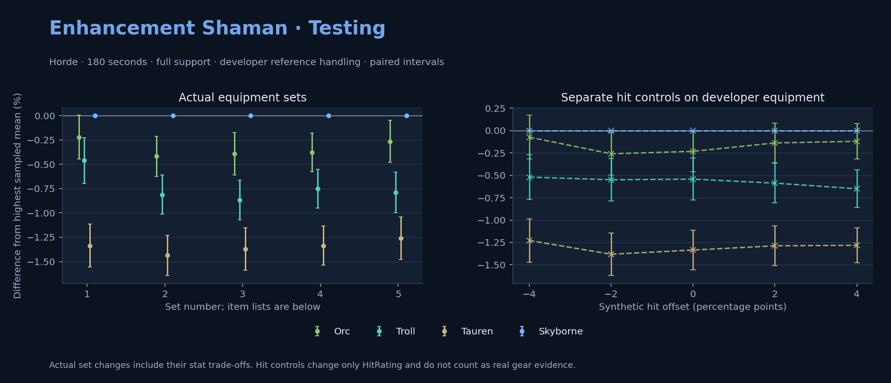

Horde · Orc / Troll / Tauren / Skyborne

No pet or guardian appears in the reference combat metrics. Reference: Orc, developer equipment, 180 seconds and full support. Pet choices remain those of the developer build.
WoWSims developer · Testing
180 seconds, full support and original developer references. Hit below is generic sheet melee / spell hit; school and talent bonuses can be attached directly to spells.
| Race | DPS | Gap and interval | Generic hit | Replay |
|---|---|---|---|---|
| Skyborne | 778.55 | +0.000% ± 0.000 | 8.9% / 8.9% | Native input · Website JSON |
| Orc | 776.83 | -0.220% ± 0.224 | 8.9% / 8.9% | Native input · Website JSON |
| Troll | 774.96 | -0.460% ± 0.234 | 8.9% / 8.9% | Native input · Website JSON |
| Tauren | 768.15 | -1.335% ± 0.222 | 8.9% / 8.9% | Native input · Website JSON |
| Slot | Item | ID | Enchant |
|---|---|---|---|
| Head | Blue Dragonscale Helm | 252604 | Lesser Arcane Amalgamation |
| Neck | Beads of Ogre Mojo | 22149 | Enchant Necklace - Spell Power |
| Shoulder | Mantle of the Timbermaw | 19050 | |
| Back | Arcanoweave Cloak | 272411 | Enchant Cloak - Lesser Agility |
| Chest | Vest of The Five Thunders | 227004 | Enchant Chest - Major Intellect |
| Wrist | Bands of The Five Thunders | 227017 | Enchant Bracer - Superior Intellect |
| Hands | Storm Gauntlets | 12632 | Enchant Gloves - Natural Power |
| Waist | Belt of the Archmage | 18405 | |
| Legs | Ironfeather Leggings | 252486 | Lesser Arcane Amalgamation |
| Feet | Slippers of The Five Thunders | 227007 | Mystic Rugged Armor Kit |
| Ring 1 | Ferocious Watcher's Signet | 275972 | |
| Ring 2 | Channeler's Ring | 272406 | |
| Trinket 1 | Weakness Analyzer | 272438 | |
| Trinket 2 | Frozen Heart of the Mountain | 249469 | |
| Main hand | Manual Crowd Pummeler | 9449 | Enchant 2H Weapon - Mighty Spell Power |
| Ranged / relic | Totem of the Storm | 23199 |
Published ranked alternatives · Published pre-raid
Recorded source replacements: [{"slot": "feet", "from": 22240, "to": 275618, "publishedAlternativeRank": 2, "publishedEpDelta": -38.3, "reason": "First published alternative compatible with the current WoWSims database, class, faction and occupied slots."}, {"slot": "finger2", "from": 17713, "to": 272408, "publishedAlternativeRank": 1, "publishedEpDelta": -1.3, "reason": "First published alternative compatible with the current WoWSims database, class, faction and occupied slots."}]
Unimplemented enchant or active set effects: [{"id": 143, "pieces": 2, "effects": ["Improves your chance to hit by 2.0%."]}]
Unmeasured proc rates: [{"source": "enchant", "id": 1900, "name": "Enchant Weapon - Crusader", "kind": "ppm", "origin": "vanilla"}]
180 seconds, full support and original developer references. Hit below is generic sheet melee / spell hit; school and talent bonuses can be attached directly to spells.
| Race | DPS | Gap and interval | Generic hit | Replay |
|---|---|---|---|---|
| Skyborne | 736.00 | +0.000% ± 0.000 | 7.7% / 7.7% | Native input · Website JSON |
| Orc | 732.93 | -0.418% ± 0.207 | 7.7% / 7.7% | Native input · Website JSON |
| Troll | 730.02 | -0.812% ± 0.203 | 7.7% / 7.7% | Native input · Website JSON |
| Tauren | 725.43 | -1.436% ± 0.207 | 7.7% / 7.7% | Native input · Website JSON |
| Slot | Item | ID | Enchant |
|---|---|---|---|
| Head | Black Dragonscale Helm | 252605 | Lesser Arcane Amalgamation |
| Neck | Archlight Talisman | 15856 | Enchant Necklace - Strength |
| Shoulder | Mantle of the Timbermaw | 19050 | |
| Back | Arcanoweave Cloak | 272411 | Enchant Cloak - Agility |
| Chest | Dawn Armor | 252483 | Enchant Chest - Greater Stats |
| Wrist | Wildheart Bracers | 16714 | Enchant Bracer - Greater Spellpower |
| Hands | Devilsaur Gauntlets | 15063 | Enchant Gloves - Superior Strength |
| Waist | Belt of the Archmage | 18405 | |
| Legs | Devilsaur Leggings | 15062 | Lesser Arcane Amalgamation |
| Feet | Scalegut Treaders | 275618 | Forceful Rugged Armor Kit |
| Ring 1 | Channeler's Ring | 272406 | |
| Ring 2 | Cutthroat's Signet | 272408 | |
| Trinket 1 | Adaptive Combat Assistant | 272437 | |
| Trinket 2 | Rune of the Guard Captain | 19120 | |
| Main hand | Arcanite Reaper | 12784 | Enchant Weapon - Crusader |
| Ranged / relic | Burning Totem | 272433 |
Published one-slot hit alternative · Published pre-raid
One source-listed alternative; at least 80% of the source slot score retained. Reported hit selects the contrast; only native stats determine simulation outcomes. This is an experimental combination, not an endorsed best set.
Recorded source replacements: [{"slot": "feet", "from": 22240, "to": 275618, "publishedAlternativeRank": 2, "publishedEpDelta": -38.3, "reason": "First published alternative compatible with the current WoWSims database, class, faction and occupied slots."}, {"slot": "finger2", "from": 17713, "to": 272408, "publishedAlternativeRank": 1, "publishedEpDelta": -1.3, "reason": "First published alternative compatible with the current WoWSims database, class, faction and occupied slots."}]
Unimplemented enchant or active set effects: [{"id": 143, "pieces": 2, "effects": ["Improves your chance to hit by 2.0%."]}]
Unmeasured proc rates: [{"source": "enchant", "id": 1900, "name": "Enchant Weapon - Crusader", "kind": "ppm", "origin": "vanilla"}]
180 seconds, full support and original developer references. Hit below is generic sheet melee / spell hit; school and talent bonuses can be attached directly to spells.
| Race | DPS | Gap and interval | Generic hit | Replay |
|---|---|---|---|---|
| Skyborne | 731.65 | +0.000% ± 0.000 | 6.7% / 6.7% | Native input · Website JSON |
| Orc | 728.78 | -0.391% ± 0.219 | 6.7% / 6.7% | Native input · Website JSON |
| Troll | 725.30 | -0.867% ± 0.204 | 6.7% / 6.7% | Native input · Website JSON |
| Tauren | 721.60 | -1.373% ± 0.219 | 6.7% / 6.7% | Native input · Website JSON |
| Slot | Item | ID | Enchant |
|---|---|---|---|
| Head | Black Dragonscale Helm | 252605 | Lesser Arcane Amalgamation |
| Neck | Archlight Talisman | 15856 | Enchant Necklace - Strength |
| Shoulder | Mantle of the Timbermaw | 19050 | |
| Back | Arcanoweave Cloak | 272411 | Enchant Cloak - Agility |
| Chest | Timbermaw Tunic | 252484 | Enchant Chest - Greater Stats |
| Wrist | Wildheart Bracers | 16714 | Enchant Bracer - Greater Spellpower |
| Hands | Devilsaur Gauntlets | 15063 | Enchant Gloves - Superior Strength |
| Waist | Belt of the Archmage | 18405 | |
| Legs | Devilsaur Leggings | 15062 | Lesser Arcane Amalgamation |
| Feet | Scalegut Treaders | 275618 | Forceful Rugged Armor Kit |
| Ring 1 | Channeler's Ring | 272406 | |
| Ring 2 | Cutthroat's Signet | 272408 | |
| Trinket 1 | Adaptive Combat Assistant | 272437 | |
| Trinket 2 | Rune of the Guard Captain | 19120 | |
| Main hand | Arcanite Reaper | 12784 | Enchant Weapon - Crusader |
| Ranged / relic | Burning Totem | 272433 |
Published one-slot hit alternative · Published pre-raid
One source-listed alternative; at least 80% of the source slot score retained. Reported hit selects the contrast; only native stats determine simulation outcomes. This is an experimental combination, not an endorsed best set.
Recorded source replacements: [{"slot": "feet", "from": 22240, "to": 275618, "publishedAlternativeRank": 2, "publishedEpDelta": -38.3, "reason": "First published alternative compatible with the current WoWSims database, class, faction and occupied slots."}, {"slot": "finger2", "from": 17713, "to": 272408, "publishedAlternativeRank": 1, "publishedEpDelta": -1.3, "reason": "First published alternative compatible with the current WoWSims database, class, faction and occupied slots."}]
Unimplemented enchant or active set effects: [{"id": 143, "pieces": 2, "effects": ["Improves your chance to hit by 2.0%."]}]
Unmeasured proc rates: [{"source": "enchant", "id": 1900, "name": "Enchant Weapon - Crusader", "kind": "ppm", "origin": "vanilla"}]
180 seconds, full support and original developer references. Hit below is generic sheet melee / spell hit; school and talent bonuses can be attached directly to spells.
| Race | DPS | Gap and interval | Generic hit | Replay |
|---|---|---|---|---|
| Skyborne | 736.10 | +0.000% ± 0.000 | 8.0% / 8.0% | Native input · Website JSON |
| Orc | 733.32 | -0.377% ± 0.200 | 8.0% / 8.0% | Native input · Website JSON |
| Troll | 730.58 | -0.750% ± 0.197 | 8.0% / 8.0% | Native input · Website JSON |
| Tauren | 726.27 | -1.335% ± 0.200 | 8.0% / 8.0% | Native input · Website JSON |
| Slot | Item | ID | Enchant |
|---|---|---|---|
| Head | Black Dragonscale Helm | 252605 | Lesser Arcane Amalgamation |
| Neck | Archlight Talisman | 15856 | Enchant Necklace - Strength |
| Shoulder | Mantle of the Timbermaw | 19050 | |
| Back | Arcanoweave Cloak | 272411 | Enchant Cloak - Agility |
| Chest | Dawn Armor | 252483 | Enchant Chest - Greater Stats |
| Wrist | Wildheart Bracers | 16714 | Enchant Bracer - Greater Spellpower |
| Hands | Devilsaur Gauntlets | 15063 | Enchant Gloves - Superior Strength |
| Waist | Belt of the Archmage | 18405 | |
| Legs | Devilsaur Leggings | 15062 | Lesser Arcane Amalgamation |
| Feet | Shadowcraft Boots | 16711 | Forceful Rugged Armor Kit |
| Ring 1 | Channeler's Ring | 272406 | |
| Ring 2 | Cutthroat's Signet | 272408 | |
| Trinket 1 | Adaptive Combat Assistant | 272437 | |
| Trinket 2 | Rune of the Guard Captain | 19120 | |
| Main hand | Arcanite Reaper | 12784 | Enchant Weapon - Crusader |
| Ranged / relic | Burning Totem | 272433 |
Published one-slot hit alternative · Published pre-raid
One source-listed alternative; at least 80% of the source slot score retained. Reported hit selects the contrast; only native stats determine simulation outcomes. This is an experimental combination, not an endorsed best set.
Recorded source replacements: [{"slot": "shoulder", "from": 227808, "to": 19050, "publishedAlternativeRank": 1, "publishedEpDelta": -16.7, "reason": "First published alternative compatible with the current WoWSims database, class, faction and occupied slots."}, {"slot": "waist", "from": 228190, "to": 18405, "publishedAlternativeRank": 1, "publishedEpDelta": -35.4, "reason": "First published alternative compatible with the current WoWSims database, class, faction and occupied slots."}, {"slot": "feet", "from": 22240, "to": 275618, "publishedAlternativeRank": 3, "publishedEpDelta": -38.3, "reason": "First published alternative compatible with the current WoWSims database, class, faction and occupied slots."}, {"slot": "finger2", "from": 17713, "to": 272408, "publishedAlternativeRank": 1, "publishedEpDelta": -1.3, "reason": "First published alternative compatible with the current WoWSims database, class, faction and occupied slots."}]
Unimplemented enchant or active set effects: [{"id": 143, "pieces": 2, "effects": ["Improves your chance to hit by 2.0%."]}]
Unmeasured proc rates: [{"source": "enchant", "id": 1900, "name": "Enchant Weapon - Crusader", "kind": "ppm", "origin": "vanilla"}]
180 seconds, full support and original developer references. Hit below is generic sheet melee / spell hit; school and talent bonuses can be attached directly to spells.
| Race | DPS | Gap and interval | Generic hit | Replay |
|---|---|---|---|---|
| Skyborne | 731.44 | +0.000% ± 0.000 | 6.9% / 6.9% | Native input · Website JSON |
| Orc | 729.51 | -0.265% ± 0.216 | 6.9% / 6.9% | Native input · Website JSON |
| Troll | 725.67 | -0.790% ± 0.209 | 6.9% / 6.9% | Native input · Website JSON |
| Tauren | 722.22 | -1.261% ± 0.218 | 6.9% / 6.9% | Native input · Website JSON |
| Slot | Item | ID | Enchant |
|---|---|---|---|
| Head | Black Dragonscale Helm | 252605 | Lesser Arcane Amalgamation |
| Neck | Archlight Talisman | 15856 | Enchant Necklace - Strength |
| Shoulder | Mantle of the Timbermaw | 19050 | |
| Back | Arcanoweave Cloak | 272411 | Enchant Cloak - Agility |
| Chest | Timbermaw Tunic | 252484 | Enchant Chest - Greater Stats |
| Wrist | Wildheart Bracers | 16714 | Enchant Bracer - Greater Spellpower |
| Hands | Devilsaur Gauntlets | 15063 | Enchant Gloves - Superior Strength |
| Waist | Belt of the Archmage | 18405 | |
| Legs | Devilsaur Leggings | 15062 | Lesser Arcane Amalgamation |
| Feet | Scalegut Treaders | 275618 | Forceful Rugged Armor Kit |
| Ring 1 | Channeler's Ring | 272406 | |
| Ring 2 | Cutthroat's Signet | 272408 | |
| Trinket 1 | Adaptive Combat Assistant | 272437 | |
| Trinket 2 | Frozen Heart of the Mountain | 249469 | |
| Main hand | Arcanite Reaper | 12784 | Enchant Weapon - Crusader |
| Ranged / relic | Burning Totem | 272433 |
The same declared pool is available to every race. Each race keeps its best validation-sample set with its screening-selected racial policy. Separate samples confirm that choice, with fresh precision samples near the practical-loss boundary. Gaps use the highest sampled mean under that same duration, support and reference treatment as their reference. A zero reference gap does not certify a race; the main matrix also allows uncertainty in the leader.
| Pool | Seconds | Support | References | Race | DPS | Gap and interval | Racial policies / mana | Selected set | Generic hit: melee / spell | Replay |
|---|---|---|---|---|---|---|---|---|---|---|
| published-pre-raid | 60 | full | developer | Troll | 768.87 | +0.000% ± 0.00020,000 iterations | developer / developer / developerMana waits 0.0s | published-shaman-enhancement-horde-05207e11a8917a4d-higher-hit | 8.0% / 8.0% | Input · Result · Stats |
| published-pre-raid | 60 | full | developer | Skyborne | 766.54 | -0.303% ± 0.06620,000 iterations | developer / developer / developerMana waits 0.0s | published-shaman-enhancement-horde-05207e11a8917a4d-higher-hit | 8.0% / 8.0% | Input · Result · Stats |
| published-pre-raid | 60 | full | developer | Orc | 766.09 | -0.362% ± 0.07420,000 iterations | developer / developer / developerMana waits 0.0s | published-shaman-enhancement-horde-05207e11a8917a4d-higher-hit | 8.0% / 8.0% | Input · Result · Stats |
| published-pre-raid | 60 | full | developer | Tauren | 755.14 | -1.786% ± 0.07420,000 iterations | developer / developer / developerMana waits 0.0s | published-shaman-enhancement-horde-05207e11a8917a4d-higher-hit | 8.0% / 8.0% | Input · Result · Stats |
| published-pre-raid | 60 | full | explicit | Troll | 750.43 | +0.000% ± 0.00020,000 iterations | developer / developer / developerMana waits 0.0s | published-shaman-enhancement-horde-05207e11a8917a4d-higher-hit | 8.0% / 8.0% | Input · Result · Stats |
| published-pre-raid | 60 | full | explicit | Orc | 749.65 | -0.104% ± 0.07420,000 iterations | developer / developer / developerMana waits 0.0s | published-shaman-enhancement-horde-05207e11a8917a4d-higher-hit | 8.0% / 8.0% | Input · Result · Stats |
| published-pre-raid | 60 | full | explicit | Skyborne | 748.48 | -0.260% ± 0.06820,000 iterations | developer / developer / developerMana waits 0.0s | published-shaman-enhancement-horde-05207e11a8917a4d-higher-hit | 8.0% / 8.0% | Input · Result · Stats |
| published-pre-raid | 60 | full | explicit | Tauren | 739.65 | -1.437% ± 0.07420,000 iterations | developer / developer / developerMana waits 0.0s | published-shaman-enhancement-horde-05207e11a8917a4d-higher-hit | 8.0% / 8.0% | Input · Result · Stats |
| published-pre-raid | 60 | self | developer | Troll | 534.51 | +0.000% ± 0.00020,000 iterations | developer / developer / developerMana waits 0.0s | published-shaman-enhancement-horde-05207e11a8917a4d-higher-hit | 8.0% / 8.0% | Input · Result · Stats |
| published-pre-raid | 60 | self | developer | Skyborne | 533.25 | -0.235% ± 0.06420,000 iterations | developer / developer / developerMana waits 0.0s | published-shaman-enhancement-horde-05207e11a8917a4d-higher-hit | 8.0% / 8.0% | Input · Result · Stats |
| published-pre-raid | 60 | self | developer | Orc | 532.27 | -0.420% ± 0.07320,000 iterations | developer / developer / developerMana waits 0.0s | published-shaman-enhancement-horde-05207e11a8917a4d-higher-hit | 8.0% / 8.0% | Input · Result · Stats |
| published-pre-raid | 60 | self | developer | Tauren | 525.98 | -1.595% ± 0.07220,000 iterations | developer / developer / developerMana waits 0.0s | published-shaman-enhancement-horde-05207e11a8917a4d-higher-hit | 8.0% / 8.0% | Input · Result · Stats |
| published-pre-raid | 60 | self | explicit | Troll | 523.00 | +0.000% ± 0.00020,000 iterations | developer / developer / developerMana waits 2.1s | published-shaman-enhancement-horde-05207e11a8917a4d-higher-hit | 8.0% / 8.0% | Input · Result · Stats |
| published-pre-raid | 60 | self | explicit | Skyborne | 522.55 | -0.086% ± 0.06820,000 iterations | developer / developer / developerMana waits 1.8s | published-shaman-enhancement-horde-05207e11a8917a4d-higher-hit | 8.0% / 8.0% | Input · Result · Stats |
| published-pre-raid | 60 | self | explicit | Orc | 522.21 | -0.152% ± 0.07520,000 iterations | developer / developer / developerMana waits 2.0s | published-shaman-enhancement-horde-05207e11a8917a4d-higher-hit | 8.0% / 8.0% | Input · Result · Stats |
| published-pre-raid | 60 | self | explicit | Tauren | 515.73 | -1.390% ± 0.07520,000 iterations | developer / developer / developerMana waits 2.2s | published-shaman-enhancement-horde-05207e11a8917a4d-higher-hit | 8.0% / 8.0% | Input · Result · Stats |
| published-pre-raid | 180 | full | developer | Skyborne | 735.06 | +0.000% ± 0.00020,000 iterations | developer / developer / developerMana waits 2.1s | published-shaman-enhancement-horde-05207e11a8917a4d-higher-hit | 8.0% / 8.0% | Input · Result · Stats · Website JSON |
| published-pre-raid | 180 | full | developer | Orc | 731.69 | -0.458% ± 0.04620,000 iterations | developer / developer / developerMana waits 2.2s | published-shaman-enhancement-horde-05207e11a8917a4d-higher-hit | 8.0% / 8.0% | Input · Result · Stats · Website JSON |
| published-pre-raid | 180 | full | developer | Troll | 729.14 | -0.806% ± 0.04520,000 iterations | developer / developer / developerMana waits 2.3s | published-shaman-enhancement-horde-05207e11a8917a4d-higher-hit | 8.0% / 8.0% | Input · Result · Stats · Website JSON |
| published-pre-raid | 180 | full | developer | Tauren | 724.56 | -1.429% ± 0.04620,000 iterations | developer / developer / developerMana waits 2.4s | published-shaman-enhancement-horde-05207e11a8917a4d-higher-hit | 8.0% / 8.0% | Input · Result · Stats · Website JSON |
| published-pre-raid | 180 | full | explicit | Skyborne | 715.29 | +0.000% ± 0.00020,000 iterations | developer / developer / developerMana waits 27.8s | published-shaman-enhancement-horde-05207e11a8917a4d-higher-hit | 8.0% / 8.0% | Input · Result · Stats |
| published-pre-raid | 180 | full | explicit | Orc | 712.73 | -0.359% ± 0.04820,000 iterations | oncd / developer / developerMana waits 27.7s | published-shaman-enhancement-horde-05207e11a8917a4d-higher-hit | 8.0% / 8.0% | Input · Result · Stats |
| published-pre-raid | 180 | full | explicit | Troll | 710.15 | -0.719% ± 0.04920,000 iterations | developer / developer / developerMana waits 28.6s | published-shaman-enhancement-horde-05207e11a8917a4d-higher-hit | 8.0% / 8.0% | Input · Result · Stats |
| published-pre-raid | 180 | full | explicit | Tauren | 705.57 | -1.359% ± 0.04820,000 iterations | developer / developer / developerMana waits 28.7s | published-shaman-enhancement-horde-05207e11a8917a4d-higher-hit | 8.0% / 8.0% | Input · Result · Stats |
| published-pre-raid | 180 | self | developer | Skyborne | 441.86 | +0.000% ± 0.00020,000 iterations | developer / developer / developerMana waits 72.5s | published-shaman-enhancement-horde-05207e11a8917a4d-higher-hit | 8.0% / 8.0% | Input · Result · Stats |
| published-pre-raid | 180 | self | developer | Orc | 440.52 | -0.304% ± 0.05220,000 iterations | developer / developer / developerMana waits 72.3s | published-shaman-enhancement-horde-05207e11a8917a4d-higher-hit | 8.0% / 8.0% | Input · Result · Stats |
| published-pre-raid | 180 | self | developer | Troll | 438.91 | -0.669% ± 0.05320,000 iterations | developer / developer / developerMana waits 72.7s | published-shaman-enhancement-horde-05207e11a8917a4d-higher-hit | 8.0% / 8.0% | Input · Result · Stats |
| published-pre-raid | 180 | self | developer | Tauren | 436.17 | -1.288% ± 0.05220,000 iterations | developer / developer / developerMana waits 72.6s | published-shaman-enhancement-horde-05207e11a8917a4d-higher-hit | 8.0% / 8.0% | Input · Result · Stats |
| published-pre-raid | 180 | self | explicit | Skyborne | 416.24 | +0.000% ± 0.00020,000 iterations | developer / developer / developerMana waits 97.8s | published-shaman-enhancement-horde-05207e11a8917a4d-higher-hit | 8.0% / 8.0% | Input · Result · Stats |
| published-pre-raid | 180 | self | explicit | Orc | 414.81 | -0.342% ± 0.05220,000 iterations | developer / developer / developerMana waits 97.8s | published-shaman-enhancement-horde-05207e11a8917a4d-higher-hit | 8.0% / 8.0% | Input · Result · Stats |
| published-pre-raid | 180 | self | explicit | Troll | 413.34 | -0.695% ± 0.05420,000 iterations | developer / developer / developerMana waits 98.1s | published-shaman-enhancement-horde-05207e11a8917a4d-higher-hit | 8.0% / 8.0% | Input · Result · Stats |
| published-pre-raid | 180 | self | explicit | Tauren | 410.67 | -1.337% ± 0.05220,000 iterations | developer / developer / developerMana waits 98.2s | published-shaman-enhancement-horde-05207e11a8917a4d-higher-hit | 8.0% / 8.0% | Input · Result · Stats |
| published-pre-raid | 300 | full | developer | Skyborne | 716.14 | +0.000% ± 0.00020,000 iterations | developer / developer / developerMana waits 46.4s | published-shaman-enhancement-horde-05207e11a8917a4d | 7.7% / 7.7% | Input · Result · Stats |
| published-pre-raid | 300 | full | developer | Orc | 712.79 | -0.467% ± 0.04120,000 iterations | developer / developer / developerMana waits 45.8s | published-shaman-enhancement-horde-05207e11a8917a4d-higher-hit | 8.0% / 8.0% | Input · Result · Stats |
| published-pre-raid | 300 | full | developer | Troll | 711.72 | -0.616% ± 0.04120,000 iterations | developer / developer / developerMana waits 46.5s | published-shaman-enhancement-horde-05207e11a8917a4d-higher-hit | 8.0% / 8.0% | Input · Result · Stats |
| published-pre-raid | 300 | full | developer | Tauren | 706.26 | -1.380% ± 0.04120,000 iterations | developer / developer / developerMana waits 46.7s | published-shaman-enhancement-horde-05207e11a8917a4d-higher-hit | 8.0% / 8.0% | Input · Result · Stats |
| published-pre-raid | 300 | full | explicit | Skyborne | 694.60 | +0.000% ± 0.00020,000 iterations | developer / developer / developerMana waits 101.3s | published-shaman-enhancement-horde-05207e11a8917a4d | 7.7% / 7.7% | Input · Result · Stats |
| published-pre-raid | 300 | full | explicit | Orc | 691.89 | -0.389% ± 0.04220,000 iterations | developer / developer / developerMana waits 100.6s | published-shaman-enhancement-horde-05207e11a8917a4d-higher-hit | 8.0% / 8.0% | Input · Result · Stats |
| published-pre-raid | 300 | full | explicit | Troll | 690.80 | -0.547% ± 0.04220,000 iterations | oncd / developer / developerMana waits 101.0s | published-shaman-enhancement-horde-05207e11a8917a4d-higher-hit | 8.0% / 8.0% | Input · Result · Stats |
| published-pre-raid | 300 | full | explicit | Tauren | 685.64 | -1.289% ± 0.04120,000 iterations | developer / developer / developerMana waits 101.4s | published-shaman-enhancement-horde-05207e11a8917a4d-higher-hit | 8.0% / 8.0% | Input · Result · Stats |
| published-pre-raid | 300 | self | developer | Skyborne | 417.39 | +0.000% ± 0.00020,000 iterations | developer / developer / developerMana waits 159.2s | published-shaman-enhancement-horde-05207e11a8917a4d-higher-hit | 8.0% / 8.0% | Input · Result · Stats |
| published-pre-raid | 300 | self | developer | Orc | 415.88 | -0.363% ± 0.04520,000 iterations | developer / developer / developerMana waits 158.8s | published-shaman-enhancement-horde-05207e11a8917a4d-higher-hit | 8.0% / 8.0% | Input · Result · Stats |
| published-pre-raid | 300 | self | developer | Troll | 415.08 | -0.555% ± 0.04520,000 iterations | developer / developer / developerMana waits 159.3s | published-shaman-enhancement-horde-05207e11a8917a4d-higher-hit | 8.0% / 8.0% | Input · Result · Stats |
| published-pre-raid | 300 | self | developer | Tauren | 412.12 | -1.264% ± 0.04520,000 iterations | developer / developer / developerMana waits 159.1s | published-shaman-enhancement-horde-05207e11a8917a4d-higher-hit | 8.0% / 8.0% | Input · Result · Stats |
| published-pre-raid | 300 | self | explicit | Skyborne | 394.11 | +0.000% ± 0.00020,000 iterations | developer / developer / developerMana waits 200.5s | published-shaman-enhancement-horde-05207e11a8917a4d-higher-hit | 8.0% / 8.0% | Input · Result · Stats |
| published-pre-raid | 300 | self | explicit | Orc | 392.50 | -0.408% ± 0.04420,000 iterations | developer / developer / developerMana waits 200.3s | published-shaman-enhancement-horde-05207e11a8917a4d-higher-hit | 8.0% / 8.0% | Input · Result · Stats |
| published-pre-raid | 300 | self | explicit | Troll | 391.91 | -0.556% ± 0.04520,000 iterations | oncd / developer / developerMana waits 200.3s | published-shaman-enhancement-horde-05207e11a8917a4d-higher-hit | 8.0% / 8.0% | Input · Result · Stats |
| published-pre-raid | 300 | self | explicit | Tauren | 389.02 | -1.292% ± 0.04420,000 iterations | developer / developer / developerMana waits 200.6s | published-shaman-enhancement-horde-05207e11a8917a4d-higher-hit | 8.0% / 8.0% | Input · Result · Stats |
| developer-reference | 60 | full | developer | Troll | 854.88 | +0.000% ± 0.00020,000 iterations | developer / developer / developerMana waits 0.0s | developer | 8.9% / 8.9% | Input · Result · Stats |
| developer-reference | 60 | full | developer | Orc | 852.65 | -0.261% ± 0.08720,000 iterations | developer / developer / developerMana waits 0.0s | developer | 8.9% / 8.9% | Input · Result · Stats |
| developer-reference | 60 | full | developer | Skyborne | 850.17 | -0.551% ± 0.08020,000 iterations | developer / developer / developerMana waits 0.0s | developer | 8.9% / 8.9% | Input · Result · Stats |
| developer-reference | 60 | full | developer | Tauren | 836.96 | -2.097% ± 0.08620,000 iterations | developer / developer / developerMana waits 0.0s | developer | 8.9% / 8.9% | Input · Result · Stats |
| developer-reference | 60 | full | explicit | Troll | 854.92 | +0.000% ± 0.00020,000 iterations | developer / developer / developerMana waits 0.0s | developer | 8.9% / 8.9% | Input · Result · Stats |
| developer-reference | 60 | full | explicit | Orc | 852.64 | -0.267% ± 0.08820,000 iterations | developer / developer / developerMana waits 0.0s | developer | 8.9% / 8.9% | Input · Result · Stats |
| developer-reference | 60 | full | explicit | Skyborne | 850.17 | -0.555% ± 0.08020,000 iterations | developer / developer / developerMana waits 0.0s | developer | 8.9% / 8.9% | Input · Result · Stats |
| developer-reference | 60 | full | explicit | Tauren | 836.95 | -2.101% ± 0.08620,000 iterations | developer / developer / developerMana waits 0.0s | developer | 8.9% / 8.9% | Input · Result · Stats |
| developer-reference | 60 | self | developer | Troll | 612.42 | +0.000% ± 0.00020,000 iterations | developer / developer / developerMana waits 0.0s | developer | 8.9% / 8.9% | Input · Result · Stats |
| developer-reference | 60 | self | developer | Orc | 611.26 | -0.189% ± 0.08820,000 iterations | developer / developer / developerMana waits 0.0s | developer | 8.9% / 8.9% | Input · Result · Stats |
| developer-reference | 60 | self | developer | Skyborne | 609.76 | -0.434% ± 0.08220,000 iterations | developer / developer / developerMana waits 0.0s | developer | 8.9% / 8.9% | Input · Result · Stats |
| developer-reference | 60 | self | developer | Tauren | 601.42 | -1.795% ± 0.08720,000 iterations | developer / developer / developerMana waits 0.0s | developer | 8.9% / 8.9% | Input · Result · Stats |
| developer-reference | 60 | self | explicit | Troll | 612.53 | +0.000% ± 0.00020,000 iterations | developer / developer / developerMana waits 0.0s | developer | 8.9% / 8.9% | Input · Result · Stats |
| developer-reference | 60 | self | explicit | Orc | 611.03 | -0.244% ± 0.08820,000 iterations | developer / developer / developerMana waits 0.0s | developer | 8.9% / 8.9% | Input · Result · Stats |
| developer-reference | 60 | self | explicit | Skyborne | 609.60 | -0.477% ± 0.08220,000 iterations | developer / developer / developerMana waits 0.0s | developer | 8.9% / 8.9% | Input · Result · Stats |
| developer-reference | 60 | self | explicit | Tauren | 601.22 | -1.846% ± 0.08720,000 iterations | developer / developer / developerMana waits 0.0s | developer | 8.9% / 8.9% | Input · Result · Stats |
| developer-reference | 180 | full | developer | Skyborne | 778.46 | +0.000% ± 0.00020,000 iterations | developer / developer / developerMana waits 0.0s | developer | 8.9% / 8.9% | Input · Result · Stats · Website JSON |
| developer-reference | 180 | full | developer | Orc | 777.17 | -0.165% ± 0.05120,000 iterations | developer / developer / developerMana waits 0.0s | developer | 8.9% / 8.9% | Input · Result · Stats · Website JSON |
| developer-reference | 180 | full | developer | Troll | 774.81 | -0.468% ± 0.05120,000 iterations | developer / developer / developerMana waits 0.0s | developer | 8.9% / 8.9% | Input · Result · Stats · Website JSON |
| developer-reference | 180 | full | developer | Tauren | 768.32 | -1.302% ± 0.05020,000 iterations | developer / developer / developerMana waits 0.0s | developer | 8.9% / 8.9% | Input · Result · Stats · Website JSON |
| developer-reference | 180 | full | explicit | Skyborne | 773.66 | +0.000% ± 0.00020,000 iterations | developer / developer / developerMana waits 5.6s | developer | 8.9% / 8.9% | Input · Result · Stats |
| developer-reference | 180 | full | explicit | Orc | 772.30 | -0.176% ± 0.05220,000 iterations | developer / developer / developerMana waits 5.6s | developer | 8.9% / 8.9% | Input · Result · Stats |
| developer-reference | 180 | full | explicit | Troll | 769.80 | -0.498% ± 0.05320,000 iterations | developer / developer / developerMana waits 5.7s | developer | 8.9% / 8.9% | Input · Result · Stats |
| developer-reference | 180 | full | explicit | Tauren | 763.10 | -1.364% ± 0.05220,000 iterations | developer / developer / developerMana waits 5.9s | developer | 8.9% / 8.9% | Input · Result · Stats |
| developer-reference | 180 | self | developer | Skyborne | 505.20 | +0.000% ± 0.00020,000 iterations | developer / developer / developerMana waits 52.6s | developer | 8.9% / 8.9% | Input · Result · Stats |
| developer-reference | 180 | self | developer | Orc | 505.00 | -0.039% ± 0.05820,000 iterations | developer / developer / developerMana waits 52.4s | developer | 8.9% / 8.9% | Input · Result · Stats |
| developer-reference | 180 | self | developer | Troll | 502.74 | -0.487% ± 0.06020,000 iterations | developer / developer / developerMana waits 53.0s | developer | 8.9% / 8.9% | Input · Result · Stats |
| developer-reference | 180 | self | developer | Tauren | 498.97 | -1.234% ± 0.05720,000 iterations | developer / developer / developerMana waits 52.9s | developer | 8.9% / 8.9% | Input · Result · Stats |
| developer-reference | 180 | self | explicit | Skyborne | 465.36 | +0.000% ± 0.00020,000 iterations | developer / developer / developerMana waits 86.9s | developer | 8.9% / 8.9% | Input · Result · Stats |
| developer-reference | 180 | self | explicit | Orc | 465.19 | -0.038% ± 0.05920,000 iterations | developer / developer / developerMana waits 86.7s | developer | 8.9% / 8.9% | Input · Result · Stats |
| developer-reference | 180 | self | explicit | Troll | 463.28 | -0.447% ± 0.06120,000 iterations | developer / developer / developerMana waits 87.2s | developer | 8.9% / 8.9% | Input · Result · Stats |
| developer-reference | 180 | self | explicit | Tauren | 459.40 | -1.282% ± 0.05820,000 iterations | developer / developer / developerMana waits 87.1s | developer | 8.9% / 8.9% | Input · Result · Stats |
| developer-reference | 300 | full | developer | Skyborne | 760.13 | +0.000% ± 0.00020,000 iterations | developer / developer / developerMana waits 19.8s | developer | 8.9% / 8.9% | Input · Result · Stats |
| developer-reference | 300 | full | developer | Orc | 757.85 | -0.299% ± 0.04320,000 iterations | oncd / developer / developerMana waits 19.2s | developer | 8.9% / 8.9% | Input · Result · Stats |
| developer-reference | 300 | full | developer | Troll | 756.74 | -0.445% ± 0.04420,000 iterations | developer / developer / developerMana waits 19.8s | developer | 8.9% / 8.9% | Input · Result · Stats |
| developer-reference | 300 | full | developer | Tauren | 750.08 | -1.322% ± 0.04320,000 iterations | developer / developer / developerMana waits 20.0s | developer | 8.9% / 8.9% | Input · Result · Stats |
| developer-reference | 300 | full | explicit | Skyborne | 733.47 | +0.000% ± 0.00020,000 iterations | developer / developer / developerMana waits 74.9s | developer | 8.9% / 8.9% | Input · Result · Stats |
| developer-reference | 300 | full | explicit | Orc | 731.47 | -0.273% ± 0.04520,000 iterations | developer / developer / developerMana waits 74.2s | developer | 8.9% / 8.9% | Input · Result · Stats |
| developer-reference | 300 | full | explicit | Troll | 730.44 | -0.414% ± 0.04420,000 iterations | oncd / developer / developerMana waits 74.8s | developer | 8.9% / 8.9% | Input · Result · Stats |
| developer-reference | 300 | full | explicit | Tauren | 723.83 | -1.314% ± 0.04420,000 iterations | developer / developer / developerMana waits 74.9s | developer | 8.9% / 8.9% | Input · Result · Stats |
| developer-reference | 300 | self | developer | Skyborne | 466.35 | +0.000% ± 0.00020,000 iterations | developer / developer / developerMana waits 138.3s | developer | 8.9% / 8.9% | Input · Result · Stats |
| developer-reference | 300 | self | developer | Orc | 465.77 | -0.124% ± 0.04920,000 iterations | oncd / developer / developerMana waits 137.3s | developer | 8.9% / 8.9% | Input · Result · Stats |
| developer-reference | 300 | self | developer | Troll | 464.42 | -0.415% ± 0.05020,000 iterations | developer / developer / developerMana waits 138.6s | developer | 8.9% / 8.9% | Input · Result · Stats |
| developer-reference | 300 | self | developer | Tauren | 460.70 | -1.212% ± 0.04920,000 iterations | developer / developer / developerMana waits 138.4s | developer | 8.9% / 8.9% | Input · Result · Stats |
| developer-reference | 300 | self | explicit | Skyborne | 429.23 | +0.000% ± 0.00020,000 iterations | developer / developer / developerMana waits 188.5s | developer | 8.9% / 8.9% | Input · Result · Stats |
| developer-reference | 300 | self | explicit | Orc | 428.58 | -0.152% ± 0.04920,000 iterations | developer / developer / developerMana waits 188.1s | developer | 8.9% / 8.9% | Input · Result · Stats |
| developer-reference | 300 | self | explicit | Troll | 427.62 | -0.376% ± 0.05020,000 iterations | developer / developer / developerMana waits 188.7s | developer | 8.9% / 8.9% | Input · Result · Stats |
| developer-reference | 300 | self | explicit | Tauren | 423.85 | -1.253% ± 0.04920,000 iterations | developer / developer / developerMana waits 188.5s | developer | 8.9% / 8.9% | Input · Result · Stats |
180 seconds, full support and the developer equipment anchor. These checks test creature sensitivity without a full gear search.
| Target | References | Race | DPS | Gap and interval | Replay |
|---|---|---|---|---|---|
| beast | developer | Troll | 812.75 | +0.000% ± 0.000 | Input · Result |
| beast | developer | Skyborne | 778.55 | -4.208% ± 0.226 | Input · Result |
| beast | developer | Orc | 776.74 | -4.430% ± 0.237 | Input · Result |
| beast | developer | Tauren | 768.15 | -5.487% ± 0.234 | Input · Result |
| beast | explicit | Troll | 807.79 | +0.000% ± 0.000 | Input · Result |
| beast | explicit | Skyborne | 774.10 | -4.171% ± 0.230 | Input · Result |
| beast | explicit | Orc | 772.34 | -4.389% ± 0.238 | Input · Result |
| beast | explicit | Tauren | 763.03 | -5.542% ± 0.238 | Input · Result |
| elemental | developer | Skyborne | 817.18 | +0.000% ± 0.000 | Input · Result |
| elemental | developer | Orc | 776.74 | -4.949% ± 0.215 | Input · Result |
| elemental | developer | Troll | 774.32 | -5.245% ± 0.224 | Input · Result |
| elemental | developer | Tauren | 768.15 | -6.000% ± 0.211 | Input · Result |
| elemental | explicit | Skyborne | 812.51 | +0.000% ± 0.000 | Input · Result |
| elemental | explicit | Orc | 772.34 | -4.944% ± 0.218 | Input · Result |
| elemental | explicit | Troll | 769.60 | -5.281% ± 0.227 | Input · Result |
| elemental | explicit | Tauren | 763.03 | -6.090% ± 0.219 | Input · Result |
Some equipment has unimplemented enchant or set effects; Some equipment uses unmeasured proc rates; Sensitive to unavailable rotation references
These known-issue notes are source context. Runtime checks establish current cast coverage, including Mutilate. They do not prove every mechanic matches the game.